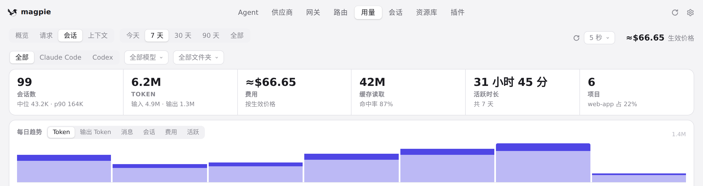
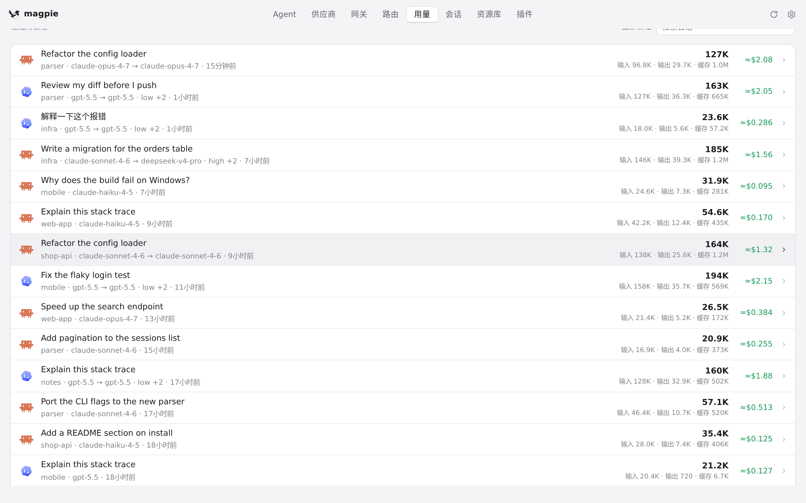
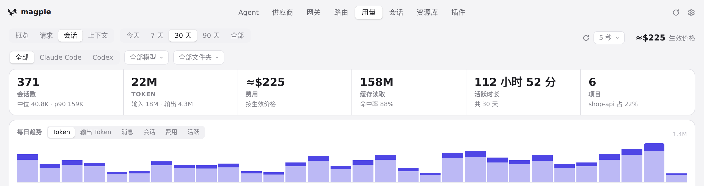
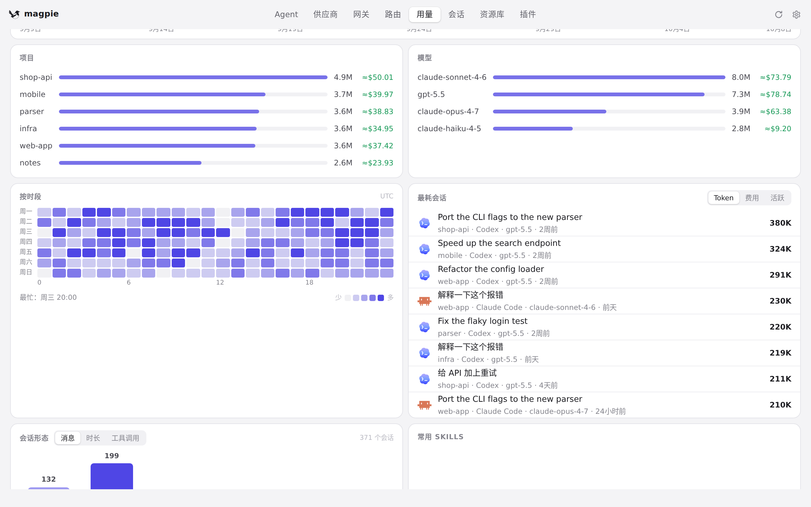

#1251 界面预览
commit f2ee42b · 回到 PR · 「用量 → 会话」页签的列表改为按服务端返回的区间会话集合筛选（Stats 新增 keys 字段，app.js 用它在渲染列表时判断成员），不再拿每个会话文件最后一行的日期去猜区间；没有 keys 时保留旧的按最后一行过滤。
红线是鼠标走过的轨迹，红色圆环是一次点击；底部文字是这一步在做什么。空格暂停，← → 逐段查看。

用量 → 会话：7 天区间 · 7 天：会话页签上方的会话数与 token、费用等

用量 → 会话：7 天区间 · 7 天：会话页签下方的会话列表及其注脚

用量 → 会话：30 天区间 · 30 天：会话页签上方的会话数

用量 → 会话：30 天区间 · 30 天：会话列表及其下方的会话数